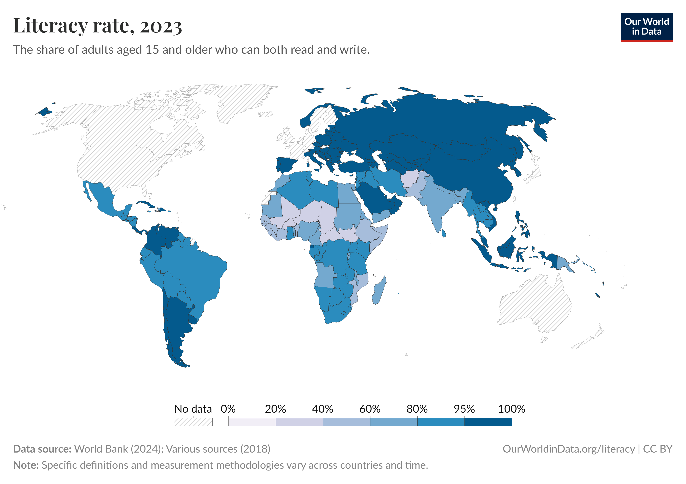
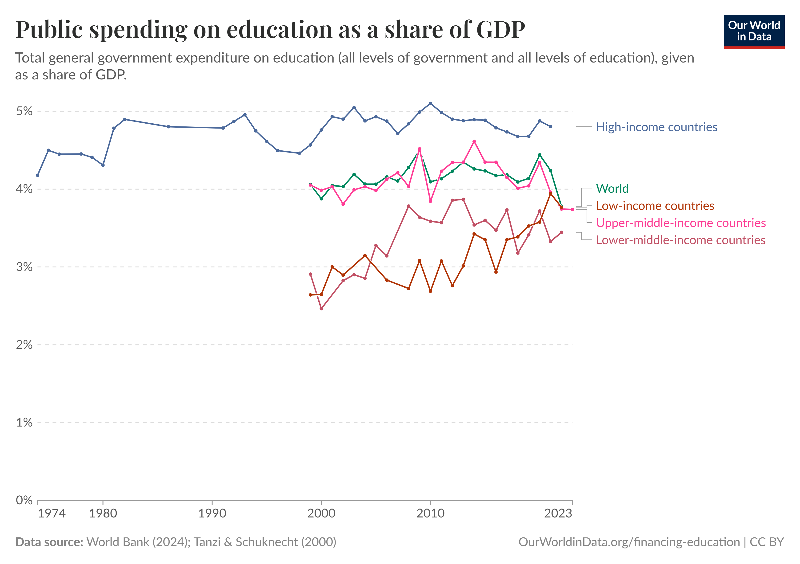
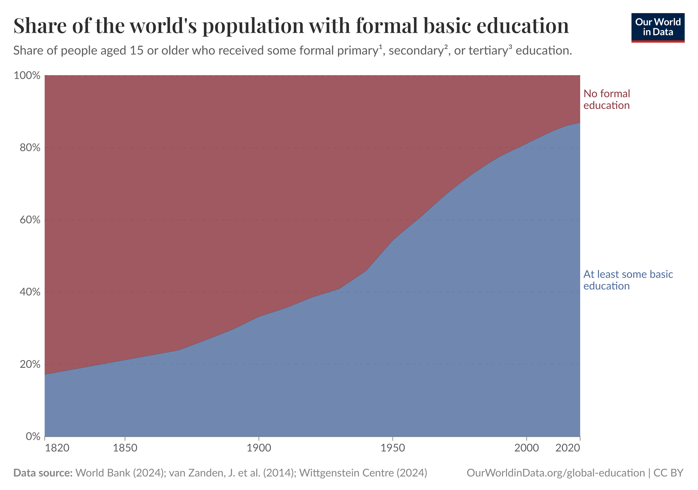

Global Education Data Overview
This page delivers a comprehensive analysis of global education metrics through dynamic, interactive tables.
The data encompasses key indicators such as literacy rates, enrollment figures, project implementations, and
funding allocations,
offering valuable insights into the progress and challenges of achieving sustainable, equitable education
worldwide.
Global Literacy and Enrollment Rates
Data Insights: Literacy & Enrollment Trends

This visualization presents a comprehensive 2023 analysis of global literacy rates among individuals aged
15
and above. Key highlights include
- Color Gradient Representation - Each country's literacy rate is depicted using a
gradient from white (0% literacy) to dark blue (100% literacy), offering an intuitive visual insight.
- Steady Improvements - The data reflects consistent progress in both literacy and
enrollment figures over time.
- Persistent Disparities - Despite overall improvements, significant regional
disparities remain, highlighting areas in need of targeted policy interventions.
- Policy Implications - The insights call for informed policy actions to bridge
educational gaps and further enhance learning outcomes.
Projects Improving Quality Education
Project Analysis
Over the past decade, a wave of innovative initiatives has profoundly reshaped global education. By
enhancing teacher capabilities, embracing digital learning, and building community-based resources, these
projects have paved the way for increased access, improved learning outcomes, and a more inclusive
educational landscape around the world.
- Strengthened teacher performance and pedagogical excellence.
- Enhanced student engagement and higher enrollment rates through digital innovations.
- Expanded access to educational resources, leading to improved literacy levels.
- Empowered underrepresented groups with inclusive learning opportunities.
- Modernized infrastructures that foster safe and dynamic learning environments.
Quality Education – Funding, Infrastructure & Indicators
Financial & Structural Analysis

This visualization presents a comprehensive analysis of government funding in education over nearly five
decades (1974–2023). The data compares global trends as well as distinct patterns among high-income, upper
middle, lower middle, and low-income regions, highlighting the connection between financial investments
and
educational outcomes.
- Investment Trends - The timeline illustrates how education spending (% GDP) has
evolved, reflecting changing priorities and economic capacities over time.
- Income Group Disparities - By segmenting data into different income groups, the
analysis reveals significant variances in funding levels and infrastructure development across regions.
- Infrastructure Impact - Increased funding is linked to enhanced educational
infrastructure, including more schools per 100,000 inhabitants and greater expenditure per student.
- Quality Outcomes - There is a clear association between higher investments and
improved
quality indicators, such as better PISA scores, lower dropout rates, and higher teacher qualification
percentages.
- Policy Implications - The trends emphasize the importance of sustained governmental
investment to drive educational success and address disparities across different income regions.
Expanded Global Education Indicators (2015-2022)
Trend Analysis

This multi-year analysis offers a detailed view of global education progress from 2015 to 2022,
highlighting key metrics that have evolved over time. From rising literacy rates to improved digital
learning access, these indicators underscore the remarkable strides made in education worldwide.
Additionally, the accompanying visualization illustrates the steady increase in the share of the world’s
population with formal education from 1820 to 2020, reflecting long-term global progress.
- Rising Literacy and Enrollment - Consistent improvements in global literacy, along
with increases in primary, secondary, and tertiary enrollment rates, demonstrate enhanced access to
education.
- Enhanced Teacher-Student Dynamics - A declining teacher-student ratio indicates a
more personalized learning environment and improved educational quality.
- Increased Financial Investment - A gradual rise in education expenditure as a
percentage of GDP highlights stronger governmental commitment to education.
- Reduction in Out-of-School Children - A downward trend in the number of out-of-school
children signifies successful efforts to reach underserved populations.
Conclusions and Next Steps
The interactive tables provide valuable insights into Quality Education worldwide. They showcase successes and
highlight persistent challenges that require concerted action from governments, communities, and international
organizations. By continuing to monitor these indicators and supporting innovative projects, we can drive
further improvements in education for all.